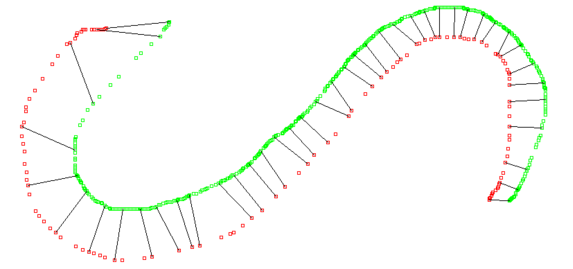
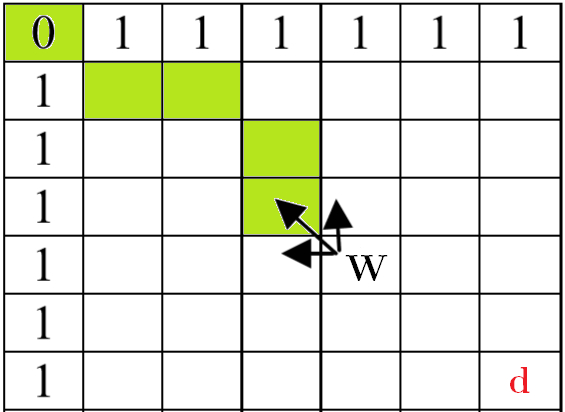
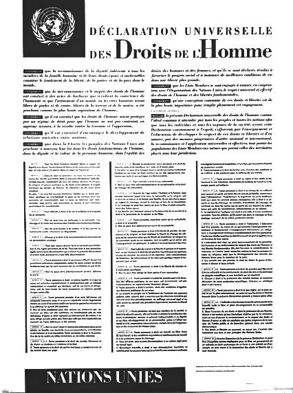
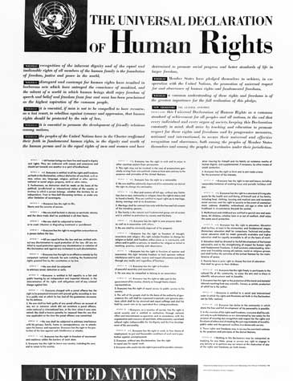
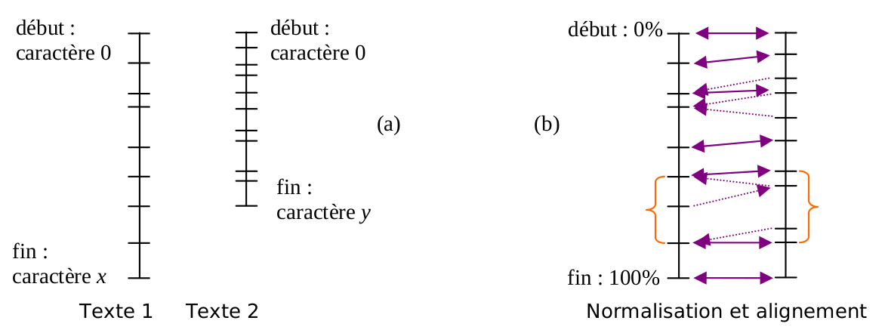
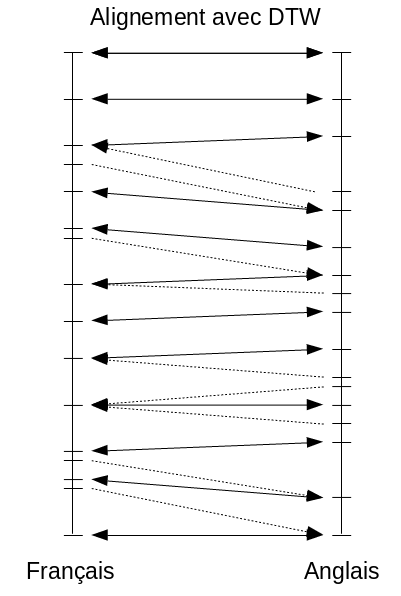
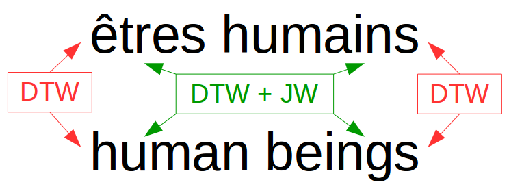

Text matching from different languages without prior knowledge

Presentation of the project
In the field of translationology, there are many approaches and algorithms for making translations from one language to another. Each method has its advantages and disadvantages, and a compromise between several methods is usually needed to achieve an efficient translation algorithm.
We are interested here in an algorithm for aligning texts in different languages based on dynamic time warping (DTW). Such an algorithm does not require either prior bilingual resources or knowledge of similarities between the languages studied.
It can thus work on any language pair, especially on languages for which few linguistic resources are available. On the other hand, its accuracy in translation is low, so we will focus mainly on aligning paragraphs rather than words.
The approach used in Kim Gerdes' algorithm, although simple at first glance, is no less original. It consists in working on the occurrences and position of words in the texts under consideration using the DTW.
Paragraph alignment
The application of DTW in a translation system can make bad associations, if one tries to be too precise, due to different syntaxes within languages. The algorithm proposed by Gerdes therefore uses the sum of the word alignments to align paragraphs, thus eliminating possible spurious signals due to erroneous word associations.
Length-based alignment is an alignment method, not based on the DTW, which allows a first alignment of paragraphs based solely on the length of the paragraphs.
Jaro-Winkler distance
To complete the DTW distance, we use the Jaro-Winkler syntax distance between $2$ strings $d_w$ , depending on the Jaro distance $d_j$:
$$d_w = d_j+lp(1-d_j) \qquad \text{ with } \qquad d_j = \frac{1}{3}\left(\frac{m}{|s_1|} + \frac{m}{|s_2|} + \frac{m-t}{m}\right)$$
- $|s_{i}|$ is the length of the string $s_{i}$
- $m$ is the number of corresponding characters
- $t$ is the number of transpositions
- $l$ is the length of the common prefix (maximum $4$ characters)
- $p$ is a coefficient that allows to favor strings with a common prefix (Winkler proposes for value $p = 0.1$)
Dynamic Time Warping (DTW)
In general, DTW algorithms seek to find the optimal monotonic (non-intersecting) alignment of two sequences of variable length. Monotonic means that the order of the sequence positions before and after DTW is respected, but that the distance between these positions may change.
DTW algorithms are dynamic programming algorithms. For our paragraph alignment, it is applied on recency vectors $(p_1, p_2-p_1, \dots, p_n-p_{n-1}, 1-p_n)$ where $p_i$ is the position of the $i$ occurrence (in text fraction) of the considered $p$ word.
$$W_{i+1,j+1} = \left| r_1-r_2 \right| + \min\left(W_{i,j+1}, W_{i+1,j}, W_{i,j}\right)$$

Integration in an alignment system
We describe here, in a synthetic way, the global algorithm performing the automatic matching of texts in different languages without prior knowledge, including the DTW algorithm explained above. This algorithm, described in detail by Kim Gerdes, can be synthesized in $4$ main steps:
- Reading and cleaning of texts: suppression of parasitic signals (accents, extra spaces, punctuation…)
- Construction of hash tables associating words with their different characteristics (number of occurrences, appearance indices…)
- Calculation for each of the texts of the internal cognates of the language (Jaro-Winkler distance), significant words or groups of words (frequent and well distributed in the text).
- Application of the DTW algorithm for the alignment of words, groups of words and paragraphs
Execution of the alignment system
The alignment system described above was developed in C++ and applied to the Universal Declaration of Human Rights (UDHR) in the following languages: English, French, Spanish, German, Russian. We present here the results obtained for the French-English language pair.


| French | English | DTW |
|---|---|---|
| respect | respect | 0.0039 |
| ces | these | 0.0046 |
| déclaration | declaration | 0.0070 |
| sans | without | 0.0107 |
| considérant | whereas | 0.0115 |
| nationalité | nationality | 0.0116 |
| libertés | freedoms | 0.0124 |
| famille | family | 0.0150 |
| société | society | 0.0152 |
| unies | united | 0.0213 |
| nations | nations | 0.0228 |
| conscience | conscience | 0.0245 |
| dignité | dignity | 0.0306 |
| religion | religion | 0.0326 |
| éducation | education | 0.0375 |
| contre | against | 0.0383 |
| article | article | 0.0545 |
| droits | rights | 0.0714 |
| présente | declaration | 0.0849 |
| religion | property | 0.0979 |
Analysis of the results
After applying the DTW algorithm to different languages, we found that word matching was effective when the DTW value returned for a word pair was less than $0.1$ (this value having been normalized to be between $0$ and $1$).
For the French and English language pair, we find erroneous associations for DTW values greater than $0.08$, notably due to the different syntax of the languages. It is therefore necessary to include the Jaro-Winkler distance in the alignment system to correct this problem.
Once the Jaro-Winkler distance is included in the alignment system, we can combine these word associations to proceed with the UDHR paragraph association. The UDHR consists of $89$ paragraphs, for a total of $2,106$ words and $11,663$ characters.
Reciprocal paragraph associations (dashes on vertical lines) are represented by solid arrows, while dashed arrows represent one-way associations.


Alignment system limits
The main limitation of the developed alignment system lies in the accuracy of the alignment, limited to a paragraph scale. The DTW algorithm alone is not sufficient to achieve an efficient alignment, and the addition of a syntax distance such as Jaro-Winkler is necessary to improve the results. The results obtained remain very satisfying.

References
- Kim Gerdes. L'alignement pour les pauvres : Adapter la bonne métrique pour unalgorithme dynamique de dilatation temporelle pour l'alignement sans ressources de corpus bilingues. 9e Journées internationales d'Analyse statistique des Données Textuelles, Mars 2008.
- Meinard Müller. Information retrieval for music and motion. Chapter 4 : Dynamic Time Warping, Septembre 2007.